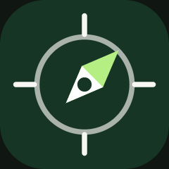
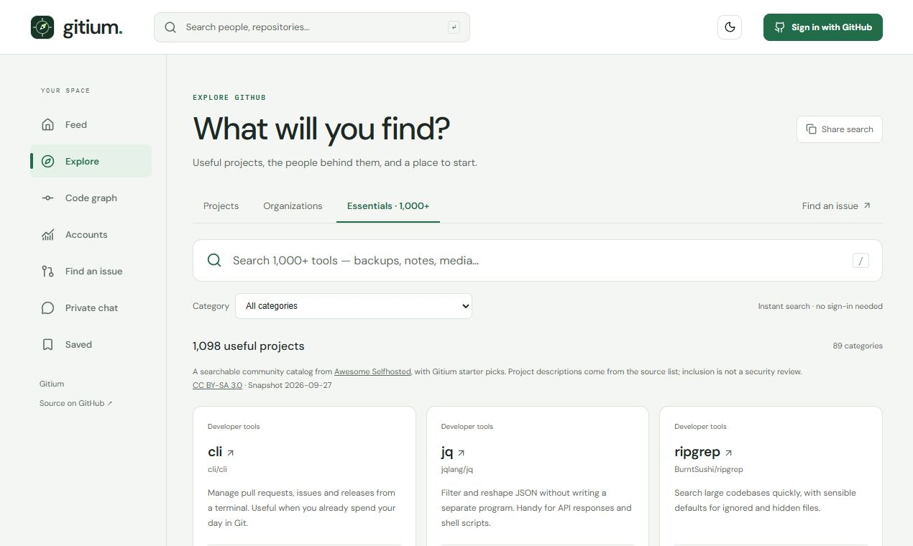
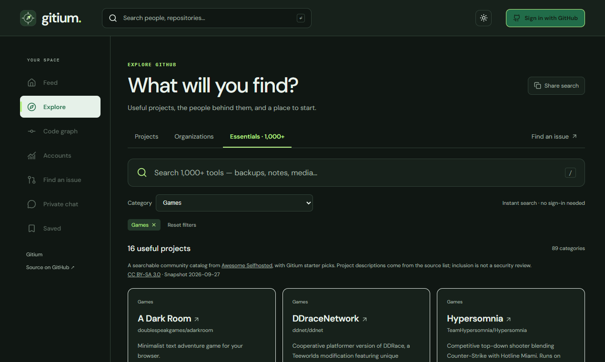
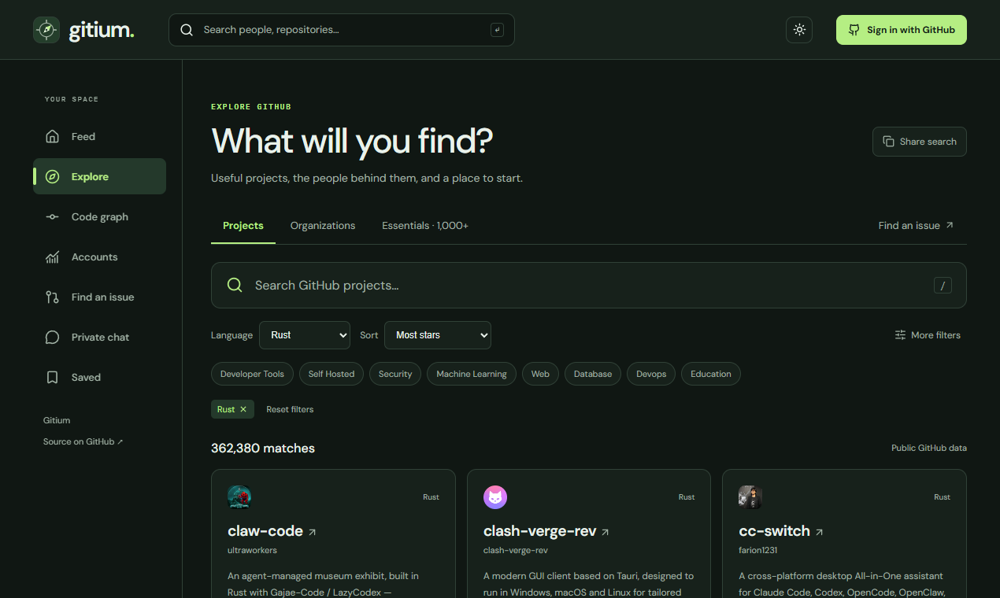
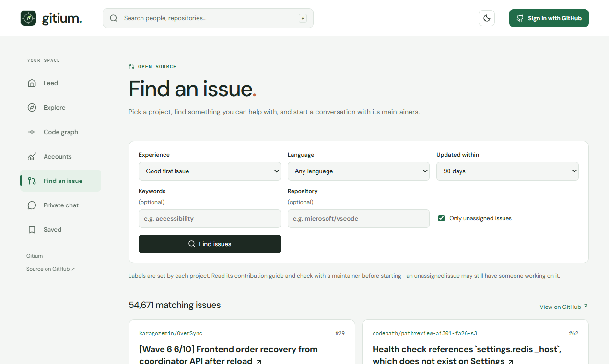

Find useful GitHub projects and somewhere to contribute.
Prepared for review. Nothing has been posted to X or Product Hunt. Live chat is not end-to-end encrypted; the encryption candidate remains local.
Download WebM. Upload to YouTube for the Product Hunt video field. Convert for X if its composer rejects this format.
1270 × 760 screenshots of the live application. 240 × 240 thumbnail.




Name: Gitium
Tagline: Find useful GitHub projects and somewhere to contribute
Suggested topics: Open Source, Developer Tools, Productivity. Use the closest categories available in the composer. The maker comment is in the full launch plan.
Follow up with three projects you actually tried and one improvement based on feedback. A useful reason to return matters more than launch-day votes.